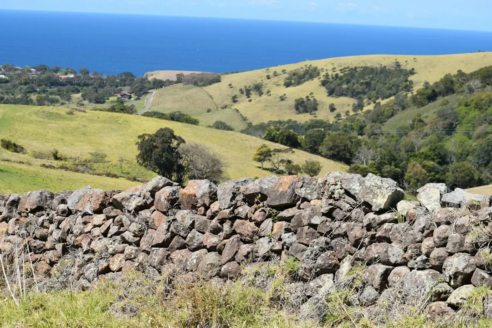

A fair retaining-wall quote should identify the wall system, approximate length and retained height, excavation, access, drainage, engineering, approvals, spoil removal, restoration and GST. Retaining Wall Pros presents quote preparation across all six Australian states and both mainland territories, with local authority checks required because approval depends on the address and site conditions. Compare providers against the same written scope rather than relying on a lineal-metre or square-metre figure alone.
For homeowners comparing retaining wall quotes australia options, the useful starting point is a consistent project brief covering dimensions, access, drainage, materials, approvals and the work behind the visible wall.
Retaining Wall Quotes Australia Explained
Retaining Wall Pros advises starting with the information that changes the job, not with a preferred material or a single headline price. Record the approximate wall length, the highest and lowest retained heights, the slope, nearby structures and how equipment, materials and spoil could reach the work area.
Photos should show the proposed wall line, the slope above and below it, gates, stairs, fences, buildings and any existing damage. Note ponding, outlets, erosion, staining and known stormwater connections. These details help a provider understand whether the enquiry involves a new wall, a repair or replacement, or a drainage or water issue.
- State the location or postcode and describe access constraints.
- Say whether the timing is still being researched, within one to three months, within three to six months, or linked to an existing wall needing attention.
- Leave unknown items marked as unsure rather than guessing a material, height or approval pathway.
Read the quote as a complete installed scope
Two quotes can look similar while covering different work. A visible facing may be priced without excavation, spoil removal, footing work, drainage, backfill, engineering, approvals, restoration or GST. Ask each provider to identify what is included, what is excluded and which assumptions depend on conditions found on site.
The material affects the decision, but it is only one part of the scope. Concrete sleepers with steel posts suit some garden, boundary and structural projects. Timber sleepers may suit garden and terraced applications where exposure, drainage and maintenance are considered. Besser or core-filled block systems bring footing, drainage and structural design questions. Rock, boulder, sandstone and gabion systems also need attention to footprint, batter, access and the surrounding landscape.
| Quote item | Ask for | Why it matters |
|---|---|---|
| Wall system | Material, posts, reinforcement and finish | Shows what is actually being compared |
| Ground work | Excavation, spoil, footing and backfill | Separates the wall face from site preparation |
| Water and approvals | Drainage, discharge, engineering and permits | Identifies work that may sit outside the headline total |
Treat drainage and approval as site questions
Water management belongs in the brief from the beginning. Ask where collected water will go, whether filtration or a subsoil system is proposed, how outlets will be handled and whether the quote includes the associated excavation and reinstatement. Ponding, erosion, staining or a known stormwater connection should be disclosed before the price is finalised.
Approval cannot be settled by one remembered national height rule. The published guidance notes that a low wall may still carry additional load when a driveway, building or another terrace sits above it. Pools, boundaries and the destination of collected water can also change the relevant question. Open the current council or government source for the property address and ask who is responsible for confirming the pathway.
Location changes the checking process, so use the relevant guide for Queensland, New South Wales, the Australian Capital Territory, Victoria, Western Australia, South Australia, Tasmania or the Northern Territory. A local source should be checked before relying on any height threshold.
Choose a system around the site, not the picture
A material comparison is useful when it is tied to the site. Timber can be considered alongside exposure, drainage and maintenance. Concrete sleepers can be assessed against access, retained height and the required structural scope. Reinforced block construction may need more attention to footings and engineering. Natural rock, boulders and sandstone can require a larger footprint or a different batter, while gabions need the available space, access and landscape context to be understood.
For an existing wall, describe movement, cracking, leaning, water marks, failed drainage or loss of surrounding ground in the enquiry. The relevant decision may be repair or replacement, but the choice should follow an assessment of the wall and the conditions around it. Do not make the material decision from a photograph alone when height, surcharge, soil, access or water remains unclear.
For a separate Brisbane-focused checklist, see the Brisbane retaining-wall quote guide.
Who this guide applies to
This guide is for property owners, renovators, landscapers and project planners preparing a retaining-wall enquiry in Australia. It is most useful when the wall is new, an existing wall needs attention, or drainage and water are part of the problem.
It also helps when the project is still at the research stage. You can submit the essentials first, then add optional information about preferred material, timing, approximate length, retained height, access and drainage. The aim is to make the same project understandable to each provider so exclusions and approval questions are visible before comparing totals.
- Use the dimensions and photographs to define the physical scope.
- Use the location to identify the current authority source.
- Use the quote comparison to test inclusions, exclusions and assumptions.
- Describe the site. Record the address or postcode, approximate length, retained heights, slope, nearby structures and access route.
- Document water. Photograph ponding, outlets, erosion, staining and known stormwater connections, then ask how drainage and discharge are included.
- Check the authority pathway. Open the current council or government source for the property and ask whether engineering or approval advice is required.
- Compare like with like. Place material, excavation, spoil, footings, drainage, backfill, restoration, engineering, permits and GST beside each quote.
| Quote item | Ask for | Why it matters |
|---|---|---|
| Wall system | Material, posts, reinforcement and finish | Shows what is actually being compared |
| Ground work | Excavation, spoil, footing and backfill | Separates the wall face from site preparation |
| Water and approvals | Drainage, discharge, engineering and permits | Identifies work that may sit outside the headline total |
Common questions
What affects the cost of a retaining wall? Height, length and wall system matter, but excavation, spoil removal, access, soil conditions, surcharge loads, drainage, engineering and approvals can change the total. Check whether backfill, disposal, permits, restoration and GST are included.
Should quotes be compared per metre or per square metre? Neither unit is enough on its own. A unit rate only becomes meaningful when the retained height, wall system, access, ground work, drainage and other inclusions are the same.
What information improves a retaining-wall enquiry? Provide the location, project need, approximate length, retained height, photographs, access details and water observations. If a detail is unknown, mark it as unsure instead of making an assumption.
Does every retaining wall follow the same approval rule? No single remembered height rule should replace a current local check. Driveways, buildings, terraces, pools, boundaries and collected-water discharge can change the approval question for the address.
This guide covers retaining-wall quote preparation, scope comparison, materials, drainage, approvals, site information and questions to ask before requesting prices.